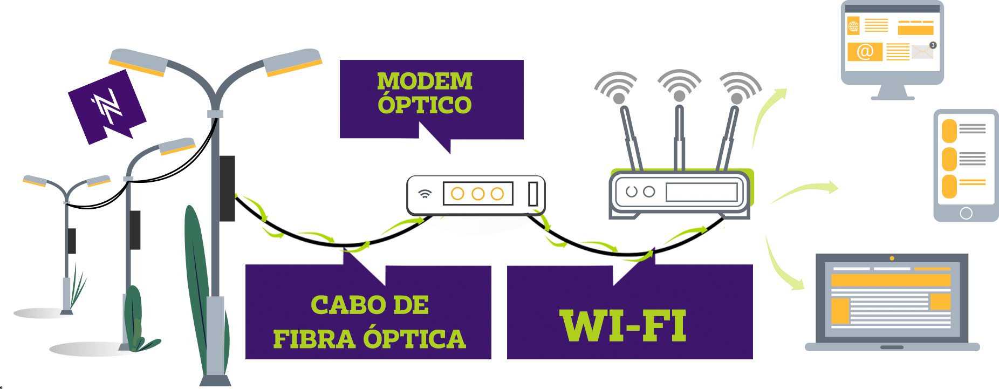

É um filamento (fio) muito fino, flexível e transparente fabricado a partir de vidro ou plástico que possui elevada capacidade de transportar luz.
Hoje é de longe a melhor tecnologia do mundo para telecomunicações, utilizada em países como Japão, Estados Unidos, Coreia do Sul, China e muitos outros.
Como ela não usa energia elétrica, ela não sofre com descargas atmosféricas em tempos de chuva. Ao invés de usar pulsos elétricos a fibra óptica utiliza a luz para transmitir os dados. Isto preserva a qualidade do sinal, evita oscilações e perda da velocidade, além de ser mais durável e estável.
A internet chega até o cliente por uma rede construída 100% com Fibra Óptica. Dentro deste cabo, a internet é transmitida na velocidade da luz e, por isso, não existe interferência de outros equipamentos elétricos ou antenas nas proximidades.
Com está tecnologia, os clientes Nowtech tem uma experiência única com a internet que nenhuma outra empresa oferece na região, tendo acesso à velocidades nunca vistas até então.
Agora você entende melhor sobre todas as vantagens desta tecnologia incrível que oferecemos para você!